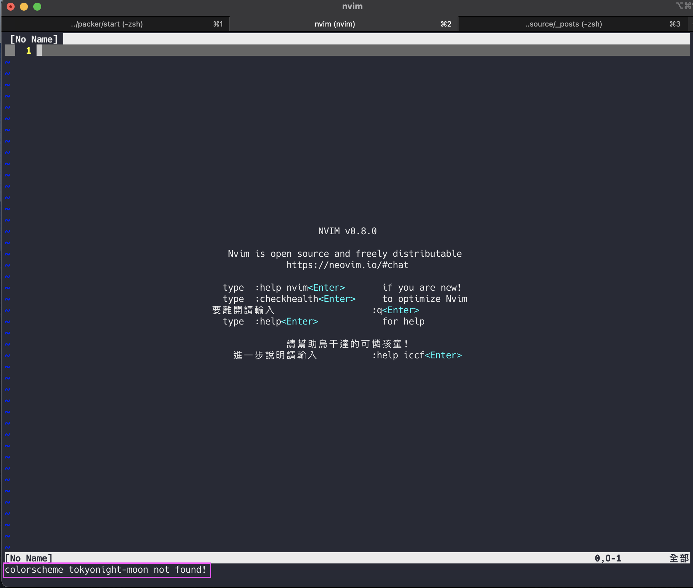
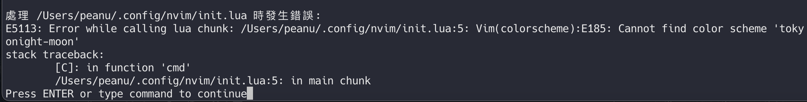

把一些基本的概念記錄下來。
補充知識 1. 什麼是 <CR>？
注意到有些指令後面有 <CR>（carriage return） 這個字，這個背後的含義其實很簡單，就是幫你按下 Enter 來執行這個指令的意思。
2. 什麼是 Buffer？
簡單來說可以想成是「分頁（Tab）」的意思，不過實際上還是有些差異。
3. 在 lua 中寫 vim 指令
有些時候你可能會在官方文件中看到類似這樣的配置：
1 2 3 4 5 let g:VM_maps = {}let g:VM_maps ['Find Under' ] = '<C-d>' let g:VM_maps ['Find Subword Under' ] = '<C-d>' let g:VM_maps ["Select Cursor Down" ] = '<M-C-Down>' let g:VM_maps ["Select Cursor Up" ] = '<M-C-Up>'
但如果你是用 lua 來撰寫的話，可以改寫成這樣子：
1 2 3 4 5 6 7 vim.cmd([[ let g:VM_maps = {} let g:VM_maps['Find Under'] = '<C-d>' let g:VM_maps['Find Subword Under'] = '<C-d>' let g:VM_maps['Add Cursor Down'] = '<C-n>' let g:VM_maps['Add Cursor Up'] = '<C-p>' ]] )
Packer.vim 的相關指令
PackerInstall 安裝套件PackerUpdate 更新套件PcakerSync 更新套件並產生一個 packer_compiled.lua，可以想成是緩存的概念吧，主要是用來提升載入速度而存在的
基本結構 1 2 3 4 5 6 7 ├── README.md ├── init.lua // nvim 的進入點（基本上就是把所有 lua 的東西引入） ├── lua // 放 lua 相關的檔案 │ └── user │ ├── options.lua └── plugin └── packer_compiled.lua
附註：user 資料夾是為了避免 .lua 撞名而開的
打開 .config/nvim/lua/user/options.lua 可以看到一些內容：
1 2 3 4 5 6 7 vim.opt.backup = false vim.opt.clipboard = "unnamedplus" vim.opt.cmdheight = 1 vim.opt.completeopt = { "menuone" , "noselect" } vim.opt.conceallevel = 0 vim.opt.fileencoding = "utf-8" vim.opt.hlsearch = true
主要用來設定 nvim 的基本配置，如果想知道所有能設定的內容與細節的話，可以下 :help options 來搜尋。
接著 init.lua 的內容是這樣：
注意在引入的時候不需要把完整路徑跟副檔名填入（跟 ES Module 在引入的感覺有點像），像這樣 lua.user.options.lua，只需要 user.options 即可。
Keymaps 打開 .config/nvim/lua/user/keymaps.lua 會看到底下內容：
1 2 3 4 5 6 7 8 9 10 11 12 13 14 15 16 17 18 19 20 21 22 23 24 25 26 27 28 29 30 31 32 33 34 35 36 37 38 local keymap = vim.keymap.setlocal opts = { silent = true }keymap("" , "<Space>" , "<Nop>" , opts) vim.g.mapleader = " " keymap("n" , "<C-h>" , "<C-w>h" , opts) keymap("n" , "<C-j>" , "<C-w>j" , opts) keymap("n" , "<C-k>" , "<C-w>k" , opts) keymap("n" , "<C-l>" , "<C-w>l" , opts) keymap("n" , "<C-Up>" , ":resize -2<CR>" , opts) keymap("n" , "<C-Down>" , ":resize +2<CR>" , opts) keymap("n" , "<C-Left>" , ":vertical resize -2<CR>" , opts) keymap("n" , "<C-Right>" , ":vertical resize +2<CR>" , opts) keymap("n" , "<S-l>" , ":bnext<CR>" , opts) keymap("n" , "<S-h>" , ":bprevious<CR>" , opts) keymap("n" , "<leader>h" , "<cmd>nohlsearch<CR>" , opts)
這邊只解釋主要的部分：
vim.g.mapleader = " "
這是用來設定 <leader>（常用快捷鍵），之後就可以用 <leader>h 的方式來表示（「空白鍵 + h）
keymap("n", "<leader>h", "<cmd>nohlsearch<CR>", opts)
他只是一個用來設定快捷鍵函式，需要的參數為：
1 map('模式' , '按键' , '映射为XX' , opts)
Plugin 先來介紹這裡會用到的 Plugin Manager。為了可以用 lua 來撰寫 config，所以這邊會用的是 vim-plug 是差不多的東西。唯一的差別在於 vim-plug 只能寫 vim script，但 packer.nvim 可以寫 lua。
接下來看到 .config/nvim/lua/user/plugins.lua，這邊我直接寫中文註解，看完你大概就知道這個檔案在幹嘛了：
1 2 3 4 5 6 7 8 9 10 11 12 13 14 15 16 17 18 19 20 21 22 23 24 25 26 27 28 29 30 31 32 33 34 35 36 37 38 39 40 41 42 43 44 45 46 47 48 49 50 51 52 53 local fn = vim.fnlocal install_path = fn.stdpath "data" .. "/site/pack/packer/start/packer.nvim" if fn.empty(fn.glob(install_path)) > 0 then PACKER_BOOTSTRAP = fn.system { "git" , "clone" , "--depth" , "1" , "https://github.com/wbthomason/packer.nvim" , install_path, } print "Installing packer close and reopen Neovim..." vim.cmd [[packadd packer.nvim]] end vim.cmd [[ augroup packer_user_config autocmd! autocmd BufWritePost plugins.lua source <afile> | PackerSync augroup end ]] local status_ok, packer = pcall (require , "packer" )if not status_ok then return end packer.init { display = { open_fn = function () return require ("packer.util" ).float { border = "rounded" } end , }, } return packer.startup(function (use) use "wbthomason/packer.nvim" use "nvim-lua/popup.nvim" use "nvim-lua/plenary.nvim" if PACKER_BOOTSTRAP then require ("packer" ).sync() end end )
安裝好的套件可以從 /Users/peanu/.local/share/nvim/site/pack/packer/start 找到。（簡單來說就是 nvim/site 裡面）
至於 nvim 裡面的其他檔案或資料夾是用來給套件存放一些資料用的，不用太在意。
Lazy Loading 簡單來說你可以設定某些套件不要在一開始打開 nvim 的時候直接載入，例如這個官方範例：
1 2 3 4 5 6 7 return require ('packer' ).startup(function (use) use 'wbthomason/packer.nvim' use '9mm/vim-closer' use {'tpope/vim-dispatch' , opt = true , cmd = {'Dispatch' , 'Make' , 'Focus' , 'Start' }}
附註：use 後面可以接一個 lua 的 Table（一種資料型態）
當我這樣子設定後 tpope/vim-dispatch 就只會在我輸入 :Dispatch 或 :Make 等等的指令後才會被載入。
順道一提，只要是設定 Lazy Loading 的套件都會出現在 /Users/peanu/.local/share/nvim/site/pack/packer/opt 裡。
Error handling 一般來說當 nvim 打開時若找不到套件的話，就會直接噴一個全屏的 Error 給你看，像這樣：

如果是用 vim script 的話是沒辦法做錯誤處理的，這邊目前的寫法是這樣子：
1 2 3 4 5 require "user.options" require "user.keymaps" require "user.plugins" vim.cmd "colorscheme tokyonight-moon"
但如果是用 lua 的話就不一樣了，我們可以改成這樣子：
1 2 3 4 require "user.options" require "user.keymaps" require "user.plugins" require "user.colorscheme"
並填入這樣的內容：
1 2 3 4 5 6 7 8 9 10 11 local colorscheme = "tokyonight-moon" local status_ok, _ = pcall (vim.cmd, "colorscheme " .. colorscheme)if not status_ok then vim.notify("colorscheme " .. colorscheme .. " not found!" ) return end
這樣子當套件載入失敗時就只會顯示訊息，不會好像整個程式都壞掉了一樣：

設定套件的 mapping 基本上設定快捷鍵的方式就是先知道你想要的指令是什麼？，並且在設定對應的按鍵。
以
1 2 3 4 5 6 7 8 9 10 11 mapping = { ["<C-k>" ] = cmp.mapping.select_prev_item(), ["<C-j>" ] = cmp.mapping.select_next_item(), ["<C-b>" ] = cmp.mapping(cmp.mapping.scroll_docs(-1 ), { "i" , "c" }), ["<C-f>" ] = cmp.mapping(cmp.mapping.scroll_docs(1 ), { "i" , "c" }), }
Telescope 功能
:Telescope find_files 找檔案:Telescope git_branches 找分支（目前 pwd 位置）:Telescope live_grep 全域搜尋關鍵字（需安裝 ripgrep ）
視窗開啟後的快捷鍵可參考 telescope.lua 檔案的內容。